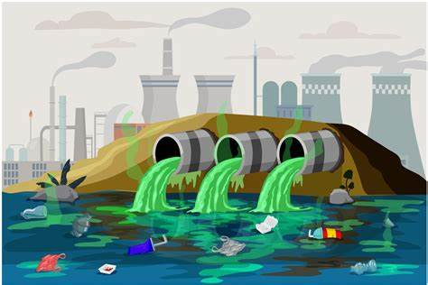

Principales Problemas
- Contaminación: Residuos industriales, agrícolas y domésticos contaminan ríos, lagos y mares.
- Sobreexplotación: El consumo excesivo agota fuentes de agua subterránea.
- Cambio climático: Alteraciones en los patrones de lluvia y sequías más frecuentes.
Efectos en los Ecosistemas
La degradación de los recursos hídricos afecta a especies animales y vegetales, poniendo en riesgo la biodiversidad. Por ejemplo, la contaminación puede causar la muerte masiva de peces y el desequilibrio de los ecosistemas acuáticos.
